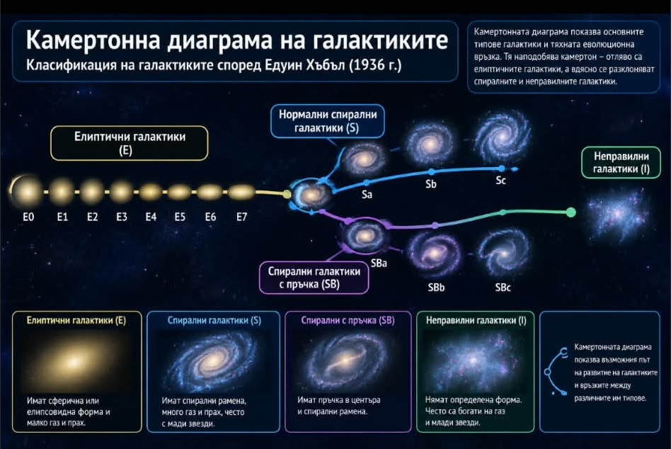

Тест №28

Камертонна диаграма на Хъбъл (класификация на видовете галактики)
Видове галактики:
- спирални
- спирални пресечени
- елиптични
- неправилни
Зад.1. Каква е формата на нашата Галактика?
Зад.2. Кой вид галактика има ръкави?
Зад.3. В кои галактики рядко се раждат нови звезди?
Зад.4. На какво разстояние от центъра на галактиката се намира Слънцето?
Зад.5. Коя звезда има огромна маса и изключително малък радиус?
Зад.6. Местна група е: